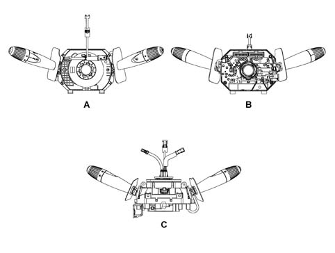
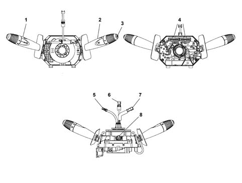
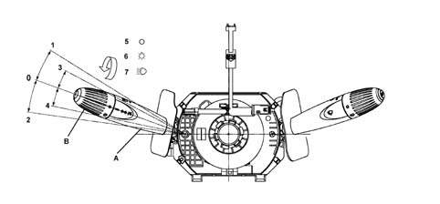
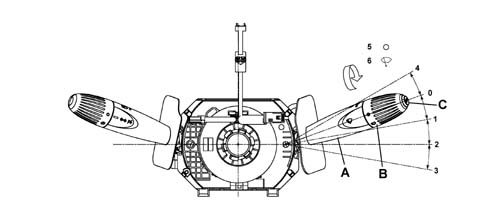
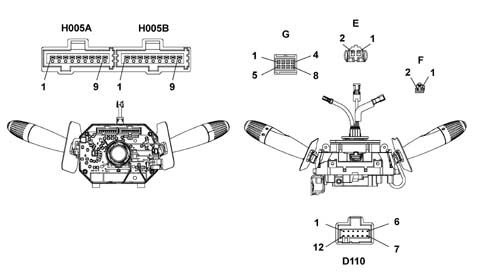

5550A stalk unit
- Path
- Descriptions > 55 ELECTRICAL EQUIPMENT > 5550 MANOEUVRING AND WARNING SIGNALS > 5550A stalk unit
- Kind
- system description
- Applies to
- all engines; all production periods
- Interactive page
- https://sloeber94.github.io/elrnDB-fPnd/en/#/2750966
Applies to: all engines; all production periods
The steering column switch unit is illustrated in the diagram.

A - Front view B - Rear view C - Lower view
Applies to: all engines; all production periods
THE CASING
It is a part of the steering column switch unit containing the electrical circuits and the switching and automatic release mechanisms which return the left lever to the rest position once the steering wheel has been realigned.

1 - Left lever with lighting/direction indicator controls 2 - Right lever with front/rear wiper controls 3 - Trip computer control button 4 - Rear connectors 5 - Electrical connection for connecting horn 6 - Electrical connection for Air Bag 7 - Electrical connection for radio 8 - Lower connector
Applies to: all engines; all production periods
THE CASING
The front part of the CASING houses the CLOCK SPRING which provides the interface with the steering wheel.
At the rear is the collar with a retaining band for fastening it to the steering column and additional attachments which guarantee the axial and angular position of the steering column switch unit on the steering column.
The steering column switch unit casing contains the fastenings for the upper and lower half casings.
The ELECTRONIC MODULE is connected to the CASING.
The rear of the CASING contains the housings for the electrical connectors.
Applies to: all engines; all production periods
ELECTRONIC MODULE
This is the electronic control unit which controls the wiping functions and is mechanically secured to the CASING to which it is electrically connected by means of special terminals.
It controls the operation of:
- Windscreen wiper: sweep rate
- Rear wiper: sweep rate and controlled by reverse;
- Windscreen washer function: smart' washing';
- Rearscreen washer function:'Smart' washing ;
Applies to: all engines; all production periods
CLOCK SPRING
It has two functions:
- to transmit the rotation of the steering wheel to the automatic release mechanism inside the CASING.
- to transfer the electrical signal for the controls on the steering column (horn and other optional serves) and connect the AIR-BAG module.
Applies to: all engines; all production periods
MULTI-PURPOSE SWITCH OR LEFT LEVER
It includes the lighting and direction indicator controls.
All the commands are activated via the lever or the ring nut at the end of the actual lever.

A - Lever B - Main light switch (on wheel) 0 - Off (with wheel in position 5) Low beam (with wheel in position 7) 1 - Right turn (parking lights) 2 - Left turn (parking lights) 3 - Change to right lane (unstable) 4 - Change to left line (unstable) 5 - Light switch off 6 - Side lights 7 - Low/high beam enablement
Applies to: all engines; all production periods
MAIN LIGHTS SWITCH
The control is at the end of the right lever and is operated by turning a special wheel (end of the stalk).
There are 3 stable positions for the ring nut when it is rotated in an anti-clockwise direction:
- Pos. 5 = No circuit switched on
- Pos. 6 = Side lights
- Pos. 7 = Side lights + enablement for dipped/main beam headlamps + rear fog lamp.
All the wheel manoeuvres (from 5 to 7and viceversa) should only be possible with the left lever in the dipped headlamps position, it should not be possible to make the above movements with the lever in the main beam headlamps position.
Applies to: all engines; all production periods
DIPPED/MAIN BEAM HEADLAMPS SWITCH
The operation is achieved by moving the lever perpendicular to the steering column (in other words lever moved from the rest position towards the dashboard).
The control has two positions, one UNSTABLE and one STABLE.
The headlamps may be switched from low to high only with the main light switch (B) in position 7
Applies to: all engines; all production periods
CONTROL FOR FLASHER - MAIN BEAM
This operated by pulling the lever from the rest position towards the centre of the steering wheel, the action is UNSTABLE as a result of which when the lever is released it returns to the rest position.
Applies to: all engines; all production periods
DIRECTION INDICATORS CONTROL
The direction indicators are operated by moving the lever on the steering wheel plane in two directions - clockwise and anti-clockwise.
The automatic release device intervenes for each STABLE position of the direction indicators and has the function of returning the lever to the rest position after the steering wheel has been realigned.
Applies to: all engines; all production periods
PARKING LIGHT CONTROL
With the key out, the side lights may be turned on (park function) by simply turning the wheel to position 6 (side lights all on and number plate lights on). In this case, when the steering wheel stalk is turned clockwise and anticlockwise, the left or right side lights come on according to the selection made in addition after the turn signal controls (position 1 and 2).
For more details, see DF unit 5540.
Applies to: all engines; all production periods
MULTI-PURPOSE SWITCH OR RIGHT LEVER
This includes the front and rear wiper controls. All the commands are activated via the lever or the ring nuts on the actual lever. There is also a button on the end of the lever which controls the trip computer functions.

A - Lever B - Rear wiper control (on wheel) C - Trip computer control key 0 - Off 1 - Inermittence 2 - 1st speed 3 - 2nd speed 4 - Antipanic (unstable) 5 - Rear wiper off 6 - Continuous rear wiper operation
Applies to: all engines; all production periods
WINDSCREEN WIPER OPERATION
The operation is achieved by moving the lever on the steering wheel, there are 5 different positions:
Pos. 0 = No circuit installed (STABLE): POS. POSITION;
Pos. 1 = Intermittent (STABLE): CLOCKWISE DIRECTION;
Pos. 2 = Continuous 1st speed (STABILE): CLOCKWISE DIRECTION;
Pos. 2 = 1st SPEED continuous (STABLE): CLOCKWISE DIRECTION;
Pos. 4 = Antipanic function (UNSTABLE): ANTI-CLOCKWISE DIRECTION;
Applies to: all engines; all production periods
WINDSCREEN WASHER CONTROL
This operated by pulling the lever from the rest position towards the centre of the steering wheel, the action is UNSTABLE as a result of which when the lever is released it returns to the rest position.
The activation of the control involves the simultaneous operation of the rearscreen wiper with the 'smart washing' function (windscreen washer function).
Applies to: all engines; all production periods
HEADLAMP WASHER CONTROL
The headlamp washer function may be operated only if the low or high beams are on.
The headlamp washer command is not a specific command but the same UNSTABLE command issued via the stalk to perform the front windscreen washer function
The headlamp washer is activated at each windscreen operation command if the low or high beams are on
At each windscreen washer command, the NPL implements the headlamp washer function for 4s.
Applies to: all engines; all production periods
REAR WIPER CONTROL
This control is on the end of the stalk and is activated by turning a special wheel.
The control has 2 STABLE positions and is turned in a clockwise direction:
- Pos. 5 = No circuit switched on;
- Pos. 6 = Rear wiper on;
The rear wiper is activated by the following events:
- Specific rear wiper control from the stalk;
- Reverse engaged when windscreen wiper on.
Applies to: all engines; all production periods
REAR WASHER CONTROL
It is operated by pushing the lever towards the dashboard, the operation is UNSTABLE as a result of which when the lever is released it returns to the rest position.
The activation of the control involves the simultaneous operation of the rearscreen wiper with the 'smart washing' function (windscreen washer function).
Applies to: all engines; all production periods
ELECTRONIC MODULE (INCORPORATED IN STEERING COLUMN SWITCH UNIT)
This is the electronic control unit which controls the operation of the electric windscreen and rearscreen wiper motors and the washing functions; it is fixed mechanically to the CASING to which it is electrically connected by means of special terminals.
In particular, it controls the operation of the:
- Windscreen wiper (stroke frequency for all trim levels);
- Rearscreen wiper (stroke frequency and power assistance in reverse gear);
- Windscreen washer function ('smart' washing for all versions);
- Rearscreen washer function ('smart' washing for all versions);
Applies to: all engines; all production periods
STEERING COLUMN SWITCH UNIT ELECTRONIC MODULE PIN-OUT
The following diagram shows the connectors on the stalk module

Applies to: all engines; all production periods
STEERING COLUMN SWITCH UNIT ELECTRONIC MODULE PIN-OUT
Connector H005A pinout
PIN | Operation |
|---|---|
relay | Negative signal from trip computer button |
relay | Intermittent rear wiper control negative signal |
3 | N.C. |
4 | Rear washer pump control negative signal |
5 | N.C. |
6 | Windscreen/headlamp washer pump control negative signal |
7 | Windscreen wiper intermittent control negative signal |
8 | Windscreen wiper 1st speed control negative signal |
9 | Windscreen wiper/antipanic 2nd speed control negative signal |
Connector H005B pinout
PIN | Operation |
|---|---|
relay | N.C. |
relay | Earth |
3 | Left turn signal/parking light control negative signal |
4 | Right turn signal/parking light control negative signal |
5 | Low beam/flasher control negative signal |
6 | Low beam control negative signal |
7 | Side light control negative signal |
8 | N.C. |
9 | N.C. |
Connector D110 pinout
PIN | Operation |
|---|---|
relay | Steering wheel lighting earth |
relay | Steering wheel control earth |
3 | Steering wheel controls volume +/-, mute |
4 | Steering wheel controls scan +/-, source |
5 | Steering wheel control lighting |
6 | N.C. |
7 | Horn earth |
8 | Horn |
9 | N.C. |
10 | N.C. |
11. | Driver side airbag + |
12. | Driver side airbag - |
Connector E pinout
PIN | Operation |
|---|---|
relay | Driver side airbag + |
relay | Driver side airbag - |
Connector F pinout
PIN | Operation |
|---|---|
relay | Horn earth |
relay | Horn |
Connector G pinout
PIN | Operation |
|---|---|
relay | Steering wheel control input 1 (volume +/-, mute) |
relay | Steering wheel control lighting |
3 | N.C. |
4 | N.C. |
5 | Steering wheel control input 2 (scan +/-, source) |
6 | Steering wheel lighting earth |
7 | N.C. |
8 | Steering wheel control earth |